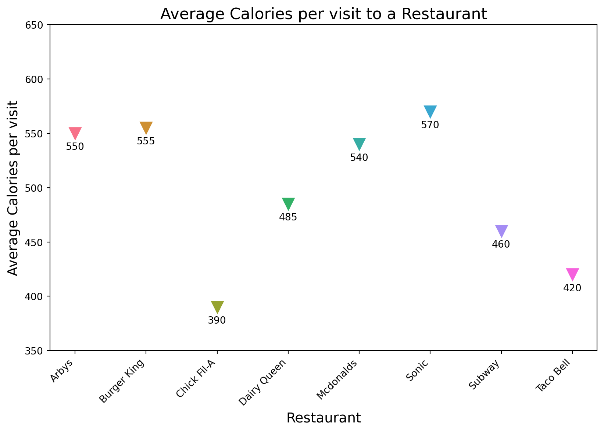
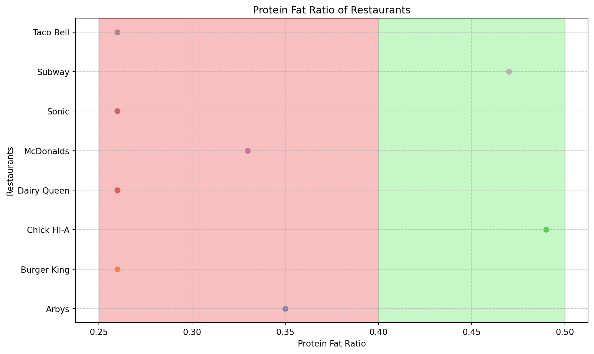

The “Fast Food Calories” dataset comprises nutritional information for various food items offered by eight distinct fast-food outlets. Each outlet’s menu is detailed, encompassing items such as burgers, fries, beverages, and salads. The dataset’s sources include: research institutions, open data repositories(tidytuesday) and compiled data sets from various sources. The dataset contains multiple columns representing different attributes of fast-food items, such as name, restaurant, category, calorie count, fat content, protein content, carbohydrate content, etc. The number of rows corresponds to the number of individual fast-food items for each restaurant in the dataset.
Exploratory Data Analysis
Question 1
What is the median calorie consumption per visit at each fast food restaurant or outlet?
Introduction
This question allows us to grasp the median calorie intake per visit across different fast food restaurants, providing insights into their nutritional profiles. By analysing the typical calorie intake, we can learn a lot about the energy content of foods served in popular fast food outlets. Examining median calorie consumption each visit acts as a realistic nutritional guide for people who are conscious of their meal choices, providing helpful information in choosing healthier eating habits. It can also be an important resource for government bodies concerned with public health, giving information that can be used to develop policies aiming at increasing nutritional standards and fighting diet-related health concerns in communities.
Approach
We’ll use the “groupby.describe()” method to create a summary table with contains statistical information like mean, mode, median, minimum, and maximum calorie content for each item in every restaurant. The variables used for this analysis are Restaurant, Item, Total Fat, and Calories. We computed the median calories consumed per person due to the distributional nature of the data. This data is visualised using a violin plot, which will provide a clear picture of the distribution of median calorie intake per person across different eateries, allowing for a better understanding and interpretation of nutrition patterns. The line plot with triangle marker is used to visualise the median calories of each restuarent. The median which is used as a central tendency metric is best visualised using the line plot. We also have derived summary statistics atble for each restuarent.
Analysis
Part 1
Code
import numpy as npimport pandas as pdimport seaborn as snsimport matplotlib.pyplot as plt# Load the datasetdf = pd.read_csv("data/fastfood_calories.csv")# Group by restaurant and calculate the median calories per visitmedian_calories_per_visit = df.groupby('restaurant')['calories'].median()# Print summary statisticssummary_table = df.groupby('restaurant')['calories']# Sort the DataFrame by restaurant namesdf_sorted = df.sort_values(by='restaurant')# Plotting violin plotplt.figure(figsize=(12, 8))violin = sns.violinplot(x='calories', y='restaurant', data=df_sorted, inner='quartile', cut=0, palette='husl')plt.title('Distribution of Calories per Visit by Restaurant', fontweight='bold')plt.xlabel('Calories', fontweight='bold')plt.ylabel('Restaurant', fontweight='bold')# Create legend using violinplot handlesplt.legend(title='Median Calories', handles=violin.collections, labels=[f"{int(median_calories)} calories"for median_calories in median_calories_per_visit], loc='upper left', bbox_to_anchor=(1, 1), prop={'weight': 'bold'})plt.show()print("Summary Table:")summary_table.describe( )
Summary Table:
count
mean
std
min
25%
50%
75%
max
restaurant
Arbys
55.0
532.727273
210.338832
70.0
360.0
550.0
690.0
1030.0
Burger King
70.0
608.571429
290.418417
190.0
365.0
555.0
760.0
1550.0
Chick Fil-A
27.0
384.444444
220.494782
70.0
220.0
390.0
480.0
970.0
Dairy Queen
42.0
520.238095
259.337694
20.0
350.0
485.0
630.0
1260.0
Mcdonalds
57.0
640.350877
410.696120
140.0
380.0
540.0
740.0
2430.0
Sonic
53.0
631.698113
300.881627
100.0
410.0
570.0
740.0
1350.0
Subway
96.0
503.020833
282.220965
50.0
287.5
460.0
740.0
1160.0
Taco Bell
115.0
443.652174
184.344883
140.0
320.0
420.0
575.0
880.0
Part 2
Code
import pandas as pdimport seaborn as snsimport matplotlib.pyplot as plt# Load the dataset into a DataFramecalories_df = pd.read_csv('data/fastfood_calories.csv')# Calculate median calories for each restaurantmedian_calories = calories_df.groupby('restaurant')['calories'].median().reset_index()# Set the color palettecolors = sns.color_palette("husl", len(median_calories['restaurant']))# Set the figure sizeplt.figure(figsize=(10, 6))# Create the line plot with inverted triangles and white backgroundfor i, restaurant inenumerate(median_calories['restaurant']): plt.plot(restaurant, median_calories.loc[i, 'calories'], marker='v', markersize=12, color=colors[i], label=restaurant) plt.text(restaurant, median_calories.loc[i, 'calories'] -15, f"{median_calories.loc[i, 'calories']:.0f}", ha='center', fontsize=10, color='black')# Add title and labelsplt.title('Calories per visit to a Restaurant',fontweight='bold')plt.xlabel('Restaurant', fontweight='bold')plt.ylabel('Calories per visit', fontweight='bold')# Rotate x-axis labels for better readability (optional)plt.xticks(rotation=45, ha='right')# Set y-axis limitplt.ylim(350, 650)# Set y-axis ticks with step 50plt.yticks(range(350, 651, 50))# Remove gridlinesplt.grid(False)

Discussion
The distribution of calorie consumption per visit across various fast-food restaurants is illustrated by the visualization of a violin plot. The width of each “violin” in the violin plot, corresponds to the density of observations at various calorie levels. Each violin’s quartiles provide information on the data’s central tendency and distribution, aiding in the understanding of the variability in calorie counts among restaurants. A summary table is printed, which includes information such as mean, standard deviation, minimum, 25th percentile, median (50th percentile), 75th percentile, and maximum calorie counts. This mix of graphic and numerical statistics offers a thorough picture of calorie consumption patterns across different fast-food businesses. The second visualization presents a line plot featuring inverted triangle marker, where each restaurant median calorie is symbolized by a marker. Horizontally positioned according to restaurant names and vertically aligned based on the average calorie count per visit, the plot enables us to discern that certain restaurants boast notably higher median calorie counts. This highlights the substantial variation in the nutritional profiles of meals served at different fast-food establishments. Some restaurants exhibit consistent calorie counts across visits, while others demonstrate greater variability, indicative of a broader selection of food options with varying calorie content.
Question 2
How do different food item categories vary in protien-fat ratio and do they meet up to the standards of the health metric?
Introduction
The goal of this question is to examine the wide range of protein-fat ratios seen in different dietary categories and determine how well they correspond with recognized health measures. Examining the variations in protein-fat proportions among different types of food items is crucial for evaluating their nutritional value. By analyzing these ratios and comparing them with health benchmarks, we can identify food categories that meet recommended nutritional criteria and those that may benefit from adjustments to optimize health benefits. Through this analysis, we aim to gain a deeper understanding of the complex interplay between dietary composition and its impact on health outcomes.
Approach
For question 2, we’ll use the “protein” and “item” variables. To standardize the proteins and fats we’ll convert them to calories. By employing the protein-fat ratio, we established a health metric to classify food items as healthy or unhealthy. We have used a half-violin plot to visualize these findings. The half-violin plot is particularly helpful since it demonstrates the distribution of our data while simultaneously indicating its symmetry. The shape of the plot gives us insight into the density of our data, which helps us comprehend the distribution of our health metrics. We have also used a scatter plot to visualize the median protein-fat ratio of each restaurant. Using these Scatter plots provides a clear visual representation of the data points’ dispersion. The summary statistics table for the menu items offered by each of these eateries was found based on the protein-fat ratio.
Analysis
Part 1
Code
import pandas as pdimport seaborn as snsimport matplotlib.pyplot as plt# Load the dataset into a DataFramecalories_df = pd.read_csv('data/fastfood_calories.csv')# Define calorie-per-gram values for fat and proteincalories_per_gram_fat =9# Fat provides 9 calories per gramcalories_per_gram_protein =4# Protein provides 4 calories per gram# Calculate calories from protein and fatcalories_df['cal_protein'] = calories_df['protein'] * calories_per_gram_proteincalories_df['cal_fat'] = calories_df['total_fat'] * calories_per_gram_fat# Calculate total caloriescalories_df['total_calories'] = calories_df['cal_protein'] + calories_df['cal_fat']# Calculate Protein_fat_ratiocalories_df['Protein_fat_ratio'] = calories_df['cal_protein'] / calories_df['total_calories']# Calculate Q2 (median) for each restaurantmedian_protein_fat_ratio = calories_df.groupby('restaurant')['Protein_fat_ratio'].median().reset_index()# Set custom color palettecolors = sns.color_palette("husl", n_colors=len(median_protein_fat_ratio))# Create a half violin plot to visualize the median Protein_fat_ratio for each restaurantplt.figure(figsize=(12, 8))sns.violinplot(x='Protein_fat_ratio', y='restaurant', data=calories_df, inner='quartile', linewidth=1.5, cut=0, split=True, palette=colors)# Add Q2 values (medians) to the plot without labelsfor i inrange(len(median_protein_fat_ratio)): plt.text(median_protein_fat_ratio['Protein_fat_ratio'][i], i, f"{median_protein_fat_ratio['Protein_fat_ratio'][i]:.2f}", fontsize=10, va='center', ha='right', color='black')# Add title and labelsplt.title('Protein-Fat Ratio by Restaurant', fontweight='bold')plt.xlabel('Protein-Fat Ratio', fontweight='bold')plt.ylabel('Restaurant', fontweight='bold')# Customize y-axis labels#plt.yticks(fontsize=12)# Show the plotplt.grid(True, linestyle='--', alpha=0.7)plt.tight_layout()plt.show()
The table below represents the health metric for the fast food restaurants based on the protein fat ratio.
Code
import matplotlib.pyplot as plt# Define dataprotein_fat_ratios = [0.35, 0.26, 0.49, 0.26, 0.33, 0.26, 0.47, 0.26]restaurants = ['Arbys', 'Burger King', 'Chick Fil-A', 'Dairy Queen', 'McDonalds', 'Sonic', 'Subway', 'Taco Bell']# Create the plotplt.figure(figsize=(10, 6))# Plot points for protein fat ratios for each restaurantfor i, restaurant inenumerate(restaurants): plt.scatter([protein_fat_ratios[i]], [restaurant], marker='o')# Shade the regionsplt.axvspan(0.25, 0.40, color='lightcoral', alpha=0.5, label='Needs Improvement')plt.axvspan(0.40, 0.50, color='lightgreen', alpha=0.5, label='Healthy')# Labels and legend for shaded regionsplt.xlabel('Protein Fat Ratio', fontweight='bold')plt.ylabel('Restaurants', fontweight='bold')plt.title('Protein Fat Ratio of Restaurants', fontweight='bold')plt.legend()# Customize y-axis labelsplt.yticks(restaurants)# Show plotplt.grid(True, linestyle='--', alpha=0.7)plt.tight_layout()plt.show()

The code chunk below represents the summary statistics of the food categories of the data set using the protein fat ratio
Code
import pandas as pdimport numpy as npcalories_df = pd.read_csv("data/fastfood_calories.csv")#below lies the dictionary for the categorisation of the food items into groupscategories = {'Burgers': ['Burger', 'Cheeseburger', 'McNuggets', 'Quarter Pounder'],'Chicken Sandwiches': ['Chicken Sandwich', 'Grilled Chicken', 'Crispy Chicken'],'Salads': ['Salad'],'Chicken Nuggets/Tenders': ['Chicken McNuggets', 'Chicken Tenders'],'Hot Dogs': ['Hot Dog'],'Subway Items': ['Subway'],'Tacos/Burritos': ['Taco', 'Burrito', 'Nachos']}##the function below was used to group the food groups based on the presence of certain words in the dictionarydef categorize_item(item):for category, keywords in categories.items():ifany(keyword.lower() in item.lower() for keyword in keywords):return categoryreturn'Other'calories_df['categorized_food_items'] = calories_df['item'].apply(categorize_item)###creating the protein fat ratio for the columns in the dataset# Define calorie-per-gram values for fat and proteincalories_per_gram_fat =9# Fat provides 9 calories per gramcalories_per_gram_protein =4# Protein provides 4 calories per gram# Calculate calories from protein and fatcalories_df['cal_protein'] = calories_df['protein'] * calories_per_gram_proteincalories_df['cal_fat'] = calories_df['total_fat'] * calories_per_gram_fat# Calculate total caloriescalories_df['total_calories'] = calories_df['cal_protein'] + calories_df['cal_fat']# Calculate Protein_fat_ratiocalories_df['Protein_fat_ratio'] = calories_df['cal_protein'] / calories_df['total_calories']summary_stats = calories_df.groupby('categorized_food_items')['Protein_fat_ratio']summary_stats.describe( )
count
mean
std
min
25%
50%
75%
max
categorized_food_items
Burgers
63.0
0.292165
0.042541
0.216471
0.265655
0.287770
0.322581
0.419355
Chicken Nuggets/Tenders
3.0
0.383500
0.008621
0.375510
0.378932
0.382353
0.387495
0.392638
Chicken Sandwiches
81.0
0.378670
0.159336
0.092742
0.267223
0.346604
0.476744
0.836364
Hot Dogs
3.0
0.223662
0.010229
0.213592
0.218471
0.223350
0.228696
0.234043
Other
252.0
0.347719
0.130331
0.123515
0.252846
0.320143
0.400865
0.697987
Salads
43.0
0.403233
0.215495
0.095694
0.258310
0.307692
0.561957
1.000000
Subway Items
6.0
0.462131
0.196619
0.233184
0.295307
0.481675
0.624068
0.671533
Tacos/Burritos
63.0
0.299672
0.075370
0.170213
0.250000
0.289474
0.339153
0.550000
Discussion
The half-violin plot depicts how the protein-fat ratio varies between fast-food outlets. The numbers near quartile lines inside the violin plots show each restaurant’s median protein-fat ratio. The quartile line range provides information on the nutritional markup of their menu items. Some restaurants have narrower distributions, indicating less protein-fat ratios in those quartile distributions, while others have larger distributions, implying more protein-fat ratio in the quartile ranges. The line plot with a circle marker depicts the protein-fat ratios of several fast-food establishments. Each point in the diagram represents a restaurant, with the placement determined by the protein-fat ratio. The shaded regions determine the threshold for classifying restaurants as either “Needs Improvement” or “Healthy” based on their protein-fat ratios. Restaurants classified in the “Needs Improvement” category suggest that their menu options are characterized by a higher proportion of fat relative to protein. Conversely, eateries placed in the “Healthy” category indicate a more favorable protein-to-fat ratio, implying a healthier balance in their menu offerings. For the summary statistics table the food items were categorized into 8 main categories, burgers, chicken nuggets/ tenders, chicken sandwiches, hotdogs, other, salads, subway items, and tacos and burritos, these categorizations were done using a dictionary. A dictionary was created for each food category containing certain words distinct to each food category. Based on the words in the dictionary for each food category, if a word in the food item can be found in the food category dictionary, the food item will be categorized as such.